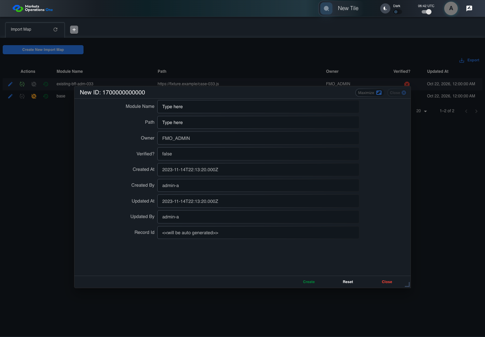
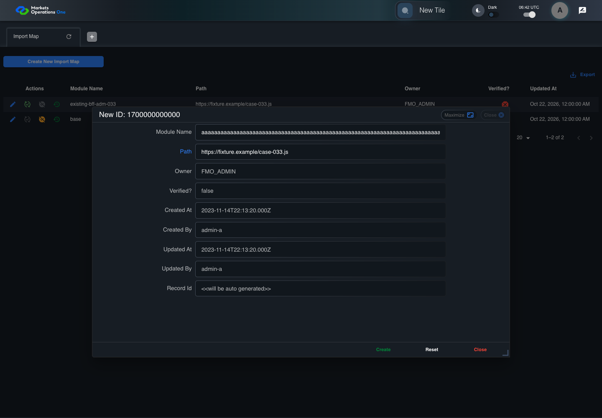
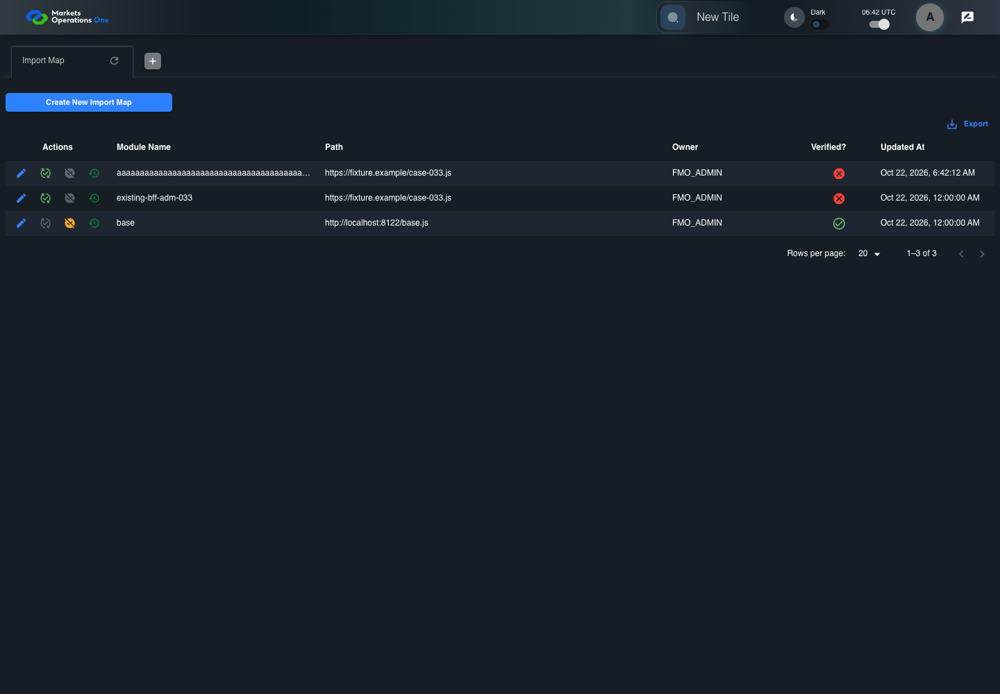
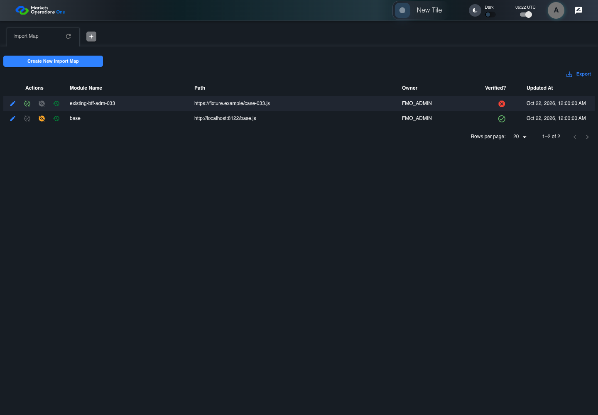
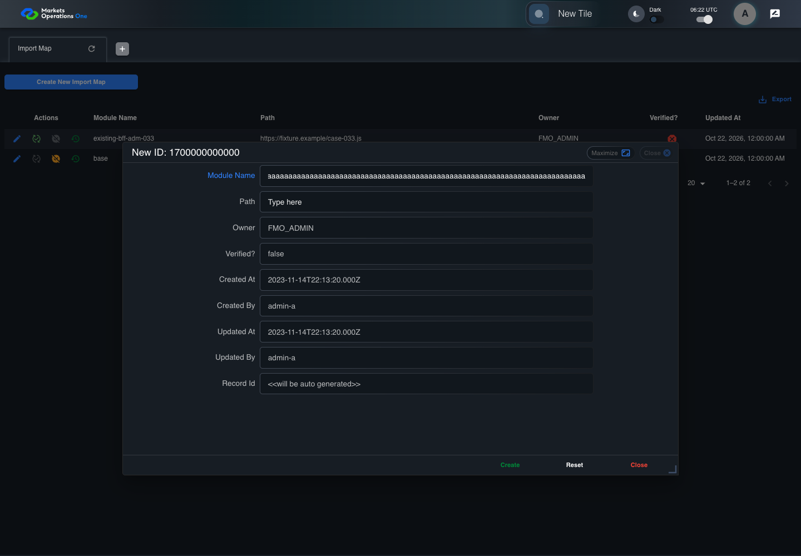
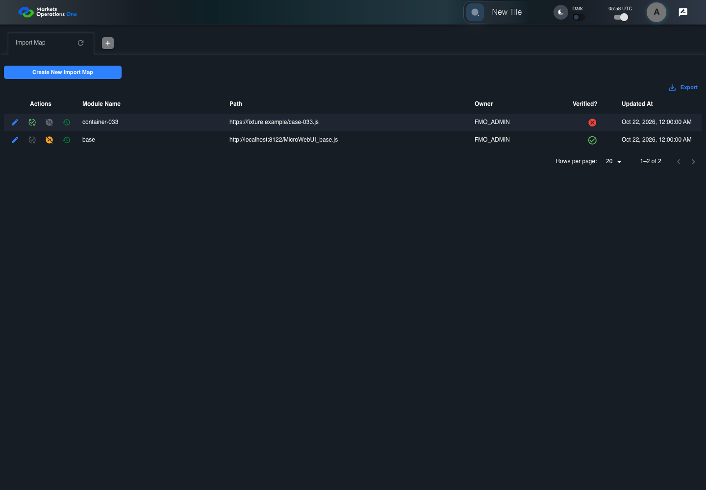
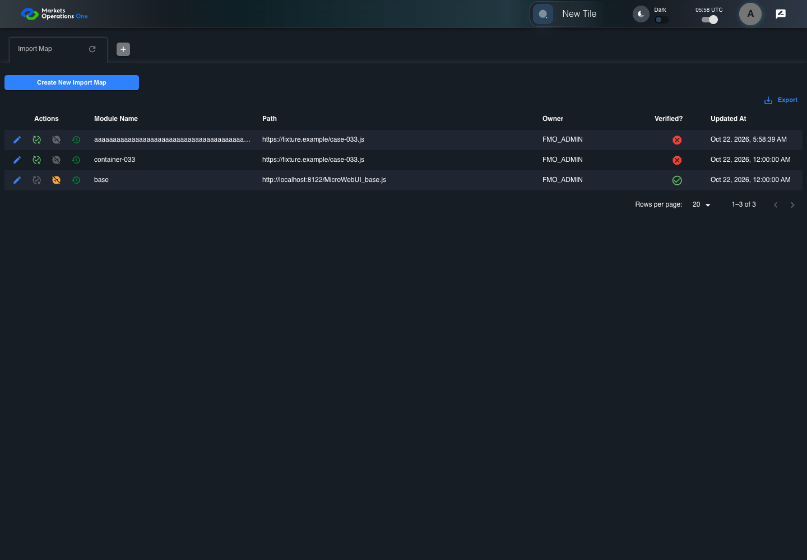

All canonical cases
BFF-ADM-033: Import Map Module Name schema boundary at 255 characters Business acceptance remains unverified. Owner: unknown. Review the canonical definition and fixture limits before acceptance.
Latest local result: PASS Business acceptance: NOT_ESTABLISHED.
The latest local result describes execution. The historical definition review assesses the case design before execution.
Latest step screenshot evidence: COMPLETE . 14/14 canonical steps have execution screenshots.
Canonical Gherkin definition . Definition version: 2. SHA-256: 58adad29fd65f02762fa3e080f73a926247c544ad8e7211057fedc311a32e57e.
Historical definition review (preflight): UNVERIFIED A definition review FAIL can coexist with local PASS. The definition failed preflight quality checks.
This historical review does not change the latest execution result. Resolve definition gaps before business acceptance.
Canonical Gherkin steps Feature: Admin storage boundary
@BFF-ADM-033
Scenario: Import Map Module Name schema boundary at 255 characters
Given Admin A uses subject "admin-a" with role "FMO_ADMIN" in an isolated authenticated browser
And the controlled Import Map fixture records the initial grid rows and persisted values
And the controlled creation clock returns 1700000000000 milliseconds
And the baseline fixture data defines "Module Name" as "container-033"
And the baseline fixture data defines "Path" as "https://fixture.example/case-033.js"
And the prepared database uses the inspected migration DDL and reports its applied schema revision
When Admin A clicks the button labeled "Create New Import Map" on the Import Map administration page
Then the dialog titled "new ID: 1700000000000" is visible on the Import Map administration page
When Admin A fills the textbox labeled "Module Name" with exactly 255 ASCII "a" characters in dialog "new ID: 1700000000000"
And Admin A fills the textbox labeled "Path" with "https://fixture.example/case-033.js" in dialog "new ID: 1700000000000"
And Admin A clicks the button labeled "Create" in dialog "new ID: 1700000000000"
Then the Import Map data grid with column "Record Id" contains exactly one row with the create response Record Id on the Import Map administration page
And in the Import Map data grid with column "Record Id", its "Module Name" cell equals the submitted value without truncation on the Import Map administration page
And the independent persisted-record readback contains exactly 255 ASCII "a" characters in "Module Name" Acceptance and evidence limits: NO_COMPLETE_REAL_APPLICATION_BINDING, CANONICAL_REVIEW_OR_EVIDENCE_UNRESOLVED.
Planned essential canonical frames: 3. Plan completeness requires separate review.
Latest attempt BFF-ADM-033 current BFF administration through actual UI PASS · application/run-072/bff-adm-033-current-bff-administration-through-actual-ui-2729a06a5808-attempt-1 · ACTUAL_APPLICATION_LOCAL_SERVICES
Actual current React and exact-current BFF admin controllers/services/JPA with actual migration DDL in disposable PostgreSQL. Controlled OUD/EMS2 identities and local Spring bootstrap. Fixture SQL seeds/mutates isolated records; service errors are actual database errors. Undefined agreed messages remain unresolved acceptance.
2026-10-22T06:42:08.615Z to 2026-10-22T06:42:13.535Z
Assertions and result · Artifact manifest · Exact run inputs and source hashes
Result SHA-256: 975fe4b8613c23669f51ada90a2c5e3a76b930be67f32a0a222020f699f76d15 Playwright trace
Machine observations Screenshot capture: CAPTURED. Named frames: 15.
Step screenshot evidence: COMPLETE. 14/14 canonical steps have execution screenshots.
Canonical step timeline Given Admin A uses subject "admin-a" with role "FMO_ADMIN" in an isolated authenticated browser
1. step-01 Visible state after step 1: Given Admin A uses subject "admin-a" with role "FMO_ADMIN" in an isolated authenticated browser
2026-10-22T06:42:10.959Z · 1440×10002f2736e877e21f1140c5d09261d6b93adc7061ab961d7f72b1c37095259c3ada And the controlled Import Map fixture records the initial grid rows and persisted values
2. step-02 Visible state after step 2: And the controlled Import Map fixture records the initial grid rows and persisted values
2026-10-22T06:42:11.123Z · 1440×10002f2736e877e21f1140c5d09261d6b93adc7061ab961d7f72b1c37095259c3ada And the controlled creation clock returns 1700000000000 milliseconds
3. step-03 Visible state after step 3: And the controlled creation clock returns 1700000000000 milliseconds
2026-10-22T06:42:11.199Z · 1440×10002f2736e877e21f1140c5d09261d6b93adc7061ab961d7f72b1c37095259c3ada And the baseline fixture data defines "Module Name" as "container-033"
4. step-04 Visible state after step 4: And the baseline fixture data defines "Module Name" as "container-033"
2026-10-22T06:42:11.267Z · 1440×1000c5b74486309ea239d3f2c76c2feaa650888bcbe7dc300ee5d8635c5c3b880366 And the baseline fixture data defines "Path" as "https://fixture.example/case-033.js"
5. step-05 Visible state after step 5: And the baseline fixture data defines "Path" as "https://fixture.example/case-033.js"
2026-10-22T06:42:11.348Z · 1440×1000c5b74486309ea239d3f2c76c2feaa650888bcbe7dc300ee5d8635c5c3b880366 And the prepared database uses the inspected migration DDL and reports its applied schema revision
6. step-06 Visible state after step 6: And the prepared database uses the inspected migration DDL and reports its applied schema revision
2026-10-22T06:42:11.416Z · 1440×1000c5b74486309ea239d3f2c76c2feaa650888bcbe7dc300ee5d8635c5c3b880366 When Admin A clicks the button labeled "Create New Import Map" on the Import Map administration page

7. step-07 Visible state after step 7: When Admin A clicks the button labeled "Create New Import Map" on the Import Map administration page
2026-10-22T06:42:11.640Z · 1440×10009a5dbba8d0d56f655034a06c5fd9902346f818ce7af07ea89cc79d4dfb2316aa Then the dialog titled "new ID: 1700000000000" is visible on the Import Map administration page
8. step-08 Visible state after step 8: Then the dialog titled "new ID: 1700000000000" is visible on the Import Map administration page
2026-10-22T06:42:11.719Z · 1440×1000adc757fd078a1509fc767ea92676f985954586e597345f832a86796e3b26f9b4 When Admin A fills the textbox labeled "Module Name" with exactly 255 ASCII "a" characters in dialog "new ID: 1700000000000"
9. step-09 Visible state after step 9: When Admin A fills the textbox labeled "Module Name" with exactly 255 ASCII "a" characters in dialog "new ID: 1700000000000"
2026-10-22T06:42:12.159Z · 1440×10004cef052b10e16f492c17cd9a75bb5f9506d8e94f162b339920e332acc753cce8 And Admin A fills the textbox labeled "Path" with "https://fixture.example/case-033.js" in dialog "new ID: 1700000000000"

10. step-10 Visible state after step 10: And Admin A fills the textbox labeled "Path" with "https://fixture.example/case-033.js" in dialog "new ID: 1700000000000"
2026-10-22T06:42:12.598Z · 1440×10001645174d568497dca3c37a9f35f6c89f1544bc92a853e135fcb1fec8daa4815d And Admin A clicks the button labeled "Create" in dialog "new ID: 1700000000000"
11. step-11 Visible state after step 11: And Admin A clicks the button labeled "Create" in dialog "new ID: 1700000000000"
2026-10-22T06:42:12.844Z · 1440×10007b73704889f31a8e714480ed7a7bdf94daa5b3247d62d4793ba9c678716abc3d Then the Import Map data grid with column "Record Id" contains exactly one row with the create response Record Id on the Import Map administration page
12. step-12 Visible state after step 12: Then the Import Map data grid with column "Record Id" contains exactly one row with the create response Record Id on the Import Map administration page
2026-10-22T06:42:12.897Z · 1440×10007b73704889f31a8e714480ed7a7bdf94daa5b3247d62d4793ba9c678716abc3d And in the Import Map data grid with column "Record Id", its "Module Name" cell equals the submitted value without truncation on the Import Map administration page
13. step-13 Visible state after step 13: And in the Import Map data grid with column "Record Id", its "Module Name" cell equals the submitted value without truncation on the Import Map administration page
2026-10-22T06:42:12.976Z · 1440×10007b73704889f31a8e714480ed7a7bdf94daa5b3247d62d4793ba9c678716abc3d And the independent persisted-record readback contains exactly 255 ASCII "a" characters in "Module Name"
14. step-14 Visible state after step 14: And the independent persisted-record readback contains exactly 255 ASCII "a" characters in "Module Name"
2026-10-22T06:42:13.028Z · 1440×10007b73704889f31a8e714480ed7a7bdf94daa5b3247d62d4793ba9c678716abc3d Additional named frames 
15. final-result The final visible state after the named test assertions.
2026-10-22T06:42:13.126Z · 1440×10007b73704889f31a8e714480ed7a7bdf94daa5b3247d62d4793ba9c678716abc3d Screenshots establish visible state only. Assertions and traces support functional claims.
Earlier attempt history (2) Earlier attempt PASS (superseded by latest PASS) BFF-ADM-033 current BFF administration through actual UI PASS · application/run-066/bff-adm-033-current-bff-administration-through-actual-ui-2729a06a5808-attempt-1 · ACTUAL_APPLICATION_LOCAL_SERVICES
Actual current React and exact-current BFF admin controllers/services/JPA with actual migration DDL in disposable PostgreSQL. Controlled OUD/EMS2 identities and local Spring bootstrap. Fixture SQL seeds/mutates isolated records; service errors are actual database errors. Undefined agreed messages remain unresolved acceptance.
2026-10-22T06:22:44.300Z to 2026-10-22T06:22:47.664Z
Assertions and result · Artifact manifest · Exact run inputs and source hashes
Result SHA-256: 308696e73302999cca3e932fe16be6d6b24d4f2502f2ed62ee7cae35d83349a1 Playwright trace
Machine observations Screenshot capture: CAPTURED. Named frames: 15.
Step screenshot evidence: COMPLETE. 14/14 canonical steps have execution screenshots.
Canonical step timeline Given Admin A uses subject "admin-a" with role "FMO_ADMIN" in an isolated authenticated browser
1. step-01 Visible state after step 1: Given Admin A uses subject "admin-a" with role "FMO_ADMIN" in an isolated authenticated browser
2026-10-22T06:22:45.758Z · 1440×100096b3b1bbdbe0644477bc679fb2a9e5ae6fe8d33bcb1f698c02b63d36968cb94f And the controlled Import Map fixture records the initial grid rows and persisted values
2. step-02 Visible state after step 2: And the controlled Import Map fixture records the initial grid rows and persisted values
2026-10-22T06:22:45.872Z · 1440×100096b3b1bbdbe0644477bc679fb2a9e5ae6fe8d33bcb1f698c02b63d36968cb94f And the controlled creation clock returns 1700000000000 milliseconds

3. step-03 Visible state after step 3: And the controlled creation clock returns 1700000000000 milliseconds
2026-10-22T06:22:45.906Z · 1440×100059f81702ecb3a28ee94143e13975e73282fb82fe7f0e0c3a708285221411b90c And the baseline fixture data defines "Module Name" as "container-033"
4. step-04 Visible state after step 4: And the baseline fixture data defines "Module Name" as "container-033"
2026-10-22T06:22:45.939Z · 1440×100096b3b1bbdbe0644477bc679fb2a9e5ae6fe8d33bcb1f698c02b63d36968cb94f And the baseline fixture data defines "Path" as "https://fixture.example/case-033.js"
5. step-05 Visible state after step 5: And the baseline fixture data defines "Path" as "https://fixture.example/case-033.js"
2026-10-22T06:22:45.972Z · 1440×100059f81702ecb3a28ee94143e13975e73282fb82fe7f0e0c3a708285221411b90c And the prepared database uses the inspected migration DDL and reports its applied schema revision
6. step-06 Visible state after step 6: And the prepared database uses the inspected migration DDL and reports its applied schema revision
2026-10-22T06:22:46.006Z · 1440×100096b3b1bbdbe0644477bc679fb2a9e5ae6fe8d33bcb1f698c02b63d36968cb94f When Admin A clicks the button labeled "Create New Import Map" on the Import Map administration page
7. step-07 Visible state after step 7: When Admin A clicks the button labeled "Create New Import Map" on the Import Map administration page
2026-10-22T06:22:46.183Z · 1440×1000d0e285314bc1ab4b79ed45d24a870515d01b7fe80a46072cd9bd7e5cb575bb12 Then the dialog titled "new ID: 1700000000000" is visible on the Import Map administration page
8. step-08 Visible state after step 8: Then the dialog titled "new ID: 1700000000000" is visible on the Import Map administration page
2026-10-22T06:22:46.227Z · 1440×10000928885df7bea09f1b007ad5aad08e1749911e2d970f1071990e331315938f5a When Admin A fills the textbox labeled "Module Name" with exactly 255 ASCII "a" characters in dialog "new ID: 1700000000000"

9. step-09 Visible state after step 9: When Admin A fills the textbox labeled "Module Name" with exactly 255 ASCII "a" characters in dialog "new ID: 1700000000000"
2026-10-22T06:22:46.630Z · 1440×100083250b72f1098b598f2575e39d9716a132738ae9356b0d17ef89c4a8d5a46ad5 And Admin A fills the textbox labeled "Path" with "https://fixture.example/case-033.js" in dialog "new ID: 1700000000000"
10. step-10 Visible state after step 10: And Admin A fills the textbox labeled "Path" with "https://fixture.example/case-033.js" in dialog "new ID: 1700000000000"
2026-10-22T06:22:47.030Z · 1440×1000925de93a99498f203bea8634ab9f0bc620584fde85df9dee0a60e47828d83941 And Admin A clicks the button labeled "Create" in dialog "new ID: 1700000000000"
11. step-11 Visible state after step 11: And Admin A clicks the button labeled "Create" in dialog "new ID: 1700000000000"
2026-10-22T06:22:47.225Z · 1440×10002e5d0ad048846da1e3a765b8cae1fbada356d4c56b63f27431b97eb2a5ca5dff Then the Import Map data grid with column "Record Id" contains exactly one row with the create response Record Id on the Import Map administration page
12. step-12 Visible state after step 12: Then the Import Map data grid with column "Record Id" contains exactly one row with the create response Record Id on the Import Map administration page
2026-10-22T06:22:47.257Z · 1440×10002f63fde8062a1501b7345387294346f7f083ae56e813b895e4346c2c25ac8f4d And in the Import Map data grid with column "Record Id", its "Module Name" cell equals the submitted value without truncation on the Import Map administration page
13. step-13 Visible state after step 13: And in the Import Map data grid with column "Record Id", its "Module Name" cell equals the submitted value without truncation on the Import Map administration page
2026-10-22T06:22:47.340Z · 1440×10002f63fde8062a1501b7345387294346f7f083ae56e813b895e4346c2c25ac8f4d And the independent persisted-record readback contains exactly 255 ASCII "a" characters in "Module Name"
14. step-14 Visible state after step 14: And the independent persisted-record readback contains exactly 255 ASCII "a" characters in "Module Name"
2026-10-22T06:22:47.372Z · 1440×10002e5d0ad048846da1e3a765b8cae1fbada356d4c56b63f27431b97eb2a5ca5dff Additional named frames 15. final-result The final visible state after the named test assertions.
2026-10-22T06:22:47.439Z · 1440×10002e5d0ad048846da1e3a765b8cae1fbada356d4c56b63f27431b97eb2a5ca5dff Screenshots establish visible state only. Assertions and traces support functional claims.
Earlier attempt PASS (superseded by latest PASS) BFF-ADM-033 current BFF administration through actual UI PASS · application/run-062/bff-adm-033-current-bff-administration-through-actual-ui-2729a06a5808-attempt-1 · ACTUAL_APPLICATION_LOCAL_SERVICES
Actual current React and exact-current BFF admin controllers/services/JPA with actual migration DDL in disposable PostgreSQL. Controlled OUD/EMS2 identities and local Spring bootstrap. Fixture SQL seeds/mutates isolated records; service errors are actual database errors. Undefined agreed messages remain unresolved acceptance.
2026-10-22T05:58:36.699Z to 2026-10-22T05:58:40.042Z
Assertions and result · Artifact manifest · Exact run inputs and source hashes
Result SHA-256: 3c79155d023ff1c1b7d558450bfedb69d40773d51abe3b3f01be2a4c7699b0f1 Playwright trace
Machine observations Screenshot capture: CAPTURED. Named frames: 15.
Step screenshot evidence: COMPLETE. 14/14 canonical steps have execution screenshots.
Canonical step timeline Given Admin A uses subject "admin-a" with role "FMO_ADMIN" in an isolated authenticated browser
1. step-01 Visible state after step 1: Given Admin A uses subject "admin-a" with role "FMO_ADMIN" in an isolated authenticated browser
2026-10-22T05:58:38.178Z · 1440×1000d082e2ce69cb71b0045f5a45a6682b94135a4f9a71ab7f80c254a496c6d1d816 And the controlled Import Map fixture records the initial grid rows and persisted values
2. step-02 Visible state after step 2: And the controlled Import Map fixture records the initial grid rows and persisted values
2026-10-22T05:58:38.296Z · 1440×1000d082e2ce69cb71b0045f5a45a6682b94135a4f9a71ab7f80c254a496c6d1d816 And the controlled creation clock returns 1700000000000 milliseconds

3. step-03 Visible state after step 3: And the controlled creation clock returns 1700000000000 milliseconds
2026-10-22T05:58:38.328Z · 1440×10008f40188a0f3f715f2e50f481d20edf01776bf0f1b04569a0bb7c96e3c2c14e80 And the baseline fixture data defines "Module Name" as "container-033"
4. step-04 Visible state after step 4: And the baseline fixture data defines "Module Name" as "container-033"
2026-10-22T05:58:38.360Z · 1440×1000d082e2ce69cb71b0045f5a45a6682b94135a4f9a71ab7f80c254a496c6d1d816 And the baseline fixture data defines "Path" as "https://fixture.example/case-033.js"
5. step-05 Visible state after step 5: And the baseline fixture data defines "Path" as "https://fixture.example/case-033.js"
2026-10-22T05:58:38.394Z · 1440×10008f40188a0f3f715f2e50f481d20edf01776bf0f1b04569a0bb7c96e3c2c14e80 And the prepared database uses the inspected migration DDL and reports its applied schema revision
6. step-06 Visible state after step 6: And the prepared database uses the inspected migration DDL and reports its applied schema revision
2026-10-22T05:58:38.425Z · 1440×1000d082e2ce69cb71b0045f5a45a6682b94135a4f9a71ab7f80c254a496c6d1d816 When Admin A clicks the button labeled "Create New Import Map" on the Import Map administration page
7. step-07 Visible state after step 7: When Admin A clicks the button labeled "Create New Import Map" on the Import Map administration page
2026-10-22T05:58:38.585Z · 1440×100074eaee4fdf3088c3c04092e00bb66cf35dce1ae3e2bb21752d4c3ded32b11f43 Then the dialog titled "new ID: 1700000000000" is visible on the Import Map administration page
8. step-08 Visible state after step 8: Then the dialog titled "new ID: 1700000000000" is visible on the Import Map administration page
2026-10-22T05:58:38.631Z · 1440×10005a6b1cecb8401f460358c2050696089f937303c7b7aba2c5f6fbac19049346e7 When Admin A fills the textbox labeled "Module Name" with exactly 255 ASCII "a" characters in dialog "new ID: 1700000000000"
9. step-09 Visible state after step 9: When Admin A fills the textbox labeled "Module Name" with exactly 255 ASCII "a" characters in dialog "new ID: 1700000000000"
2026-10-22T05:58:39.001Z · 1440×1000644d35dcb701375b8eb5066b40605f575f04db41e26fe0b0e18a9ef4d5eb01c9 And Admin A fills the textbox labeled "Path" with "https://fixture.example/case-033.js" in dialog "new ID: 1700000000000"
10. step-10 Visible state after step 10: And Admin A fills the textbox labeled "Path" with "https://fixture.example/case-033.js" in dialog "new ID: 1700000000000"
2026-10-22T05:58:39.365Z · 1440×10002668e75753f9899a1d0c18ad54303440927b94543cb8638f75a87a8501e3da90 And Admin A clicks the button labeled "Create" in dialog "new ID: 1700000000000"
11. step-11 Visible state after step 11: And Admin A clicks the button labeled "Create" in dialog "new ID: 1700000000000"
2026-10-22T05:58:39.579Z · 1440×1000eaf10ed916e3dfa7fb4aefd5c4e62d94d1a56fa9af5a65fb7c3e4df6615189aa Then the Import Map data grid with column "Record Id" contains exactly one row with the create response Record Id on the Import Map administration page

12. step-12 Visible state after step 12: Then the Import Map data grid with column "Record Id" contains exactly one row with the create response Record Id on the Import Map administration page
2026-10-22T05:58:39.612Z · 1440×1000db90d77d5e92b07ffa716f4ba7de441fa1089f18c1dff0a99b503562d898f642 And in the Import Map data grid with column "Record Id", its "Module Name" cell equals the submitted value without truncation on the Import Map administration page
13. step-13 Visible state after step 13: And in the Import Map data grid with column "Record Id", its "Module Name" cell equals the submitted value without truncation on the Import Map administration page
2026-10-22T05:58:39.693Z · 1440×1000db90d77d5e92b07ffa716f4ba7de441fa1089f18c1dff0a99b503562d898f642 And the independent persisted-record readback contains exactly 255 ASCII "a" characters in "Module Name"
14. step-14 Visible state after step 14: And the independent persisted-record readback contains exactly 255 ASCII "a" characters in "Module Name"
2026-10-22T05:58:39.727Z · 1440×1000eaf10ed916e3dfa7fb4aefd5c4e62d94d1a56fa9af5a65fb7c3e4df6615189aa Additional named frames 15. final-result The final visible state after the named test assertions.
2026-10-22T05:58:39.792Z · 1440×1000eaf10ed916e3dfa7fb4aefd5c4e62d94d1a56fa9af5a65fb7c3e4df6615189aa Screenshots establish visible state only. Assertions and traces support functional claims.